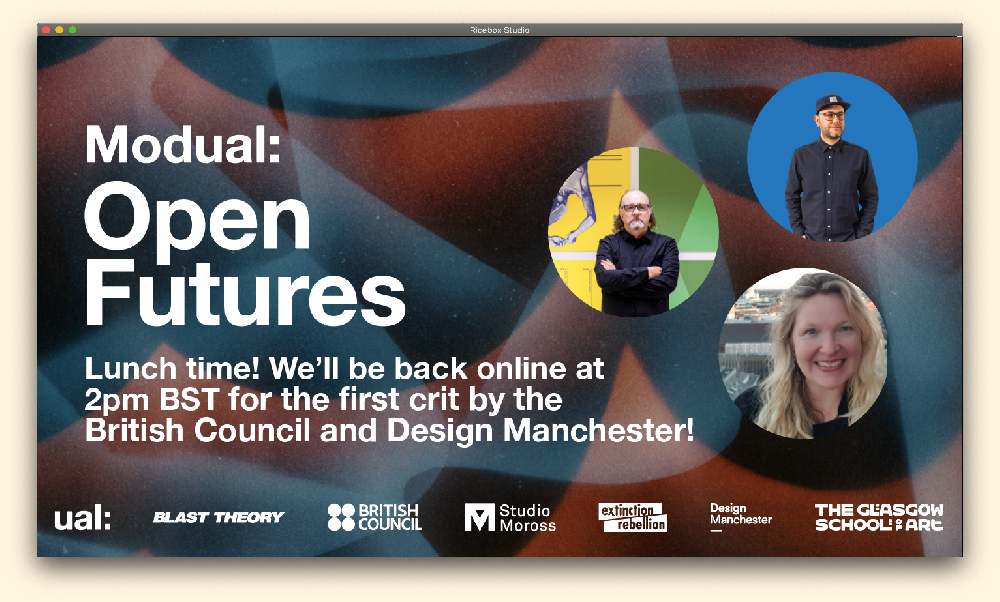
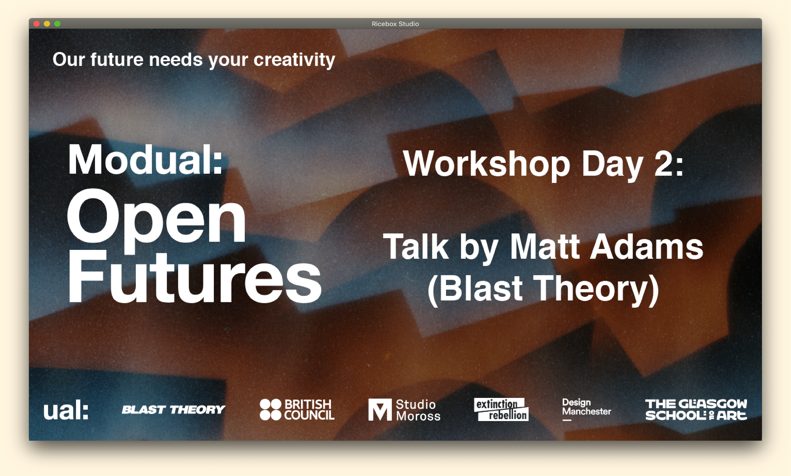
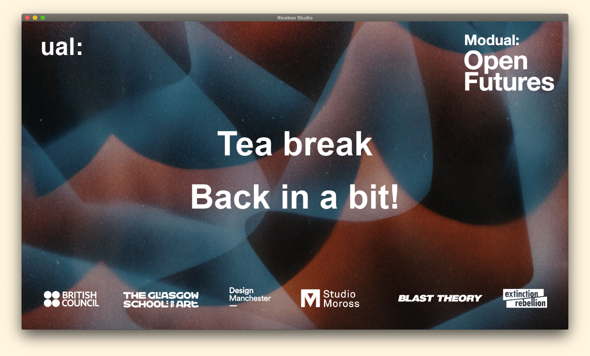
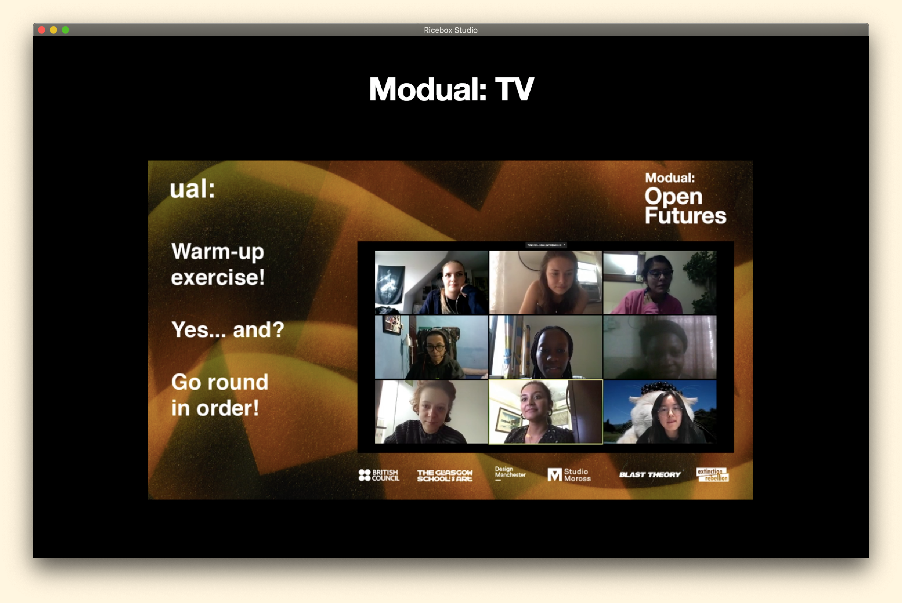
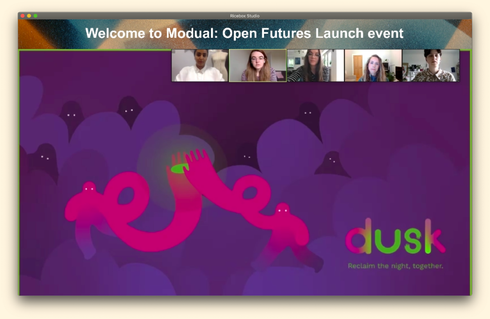
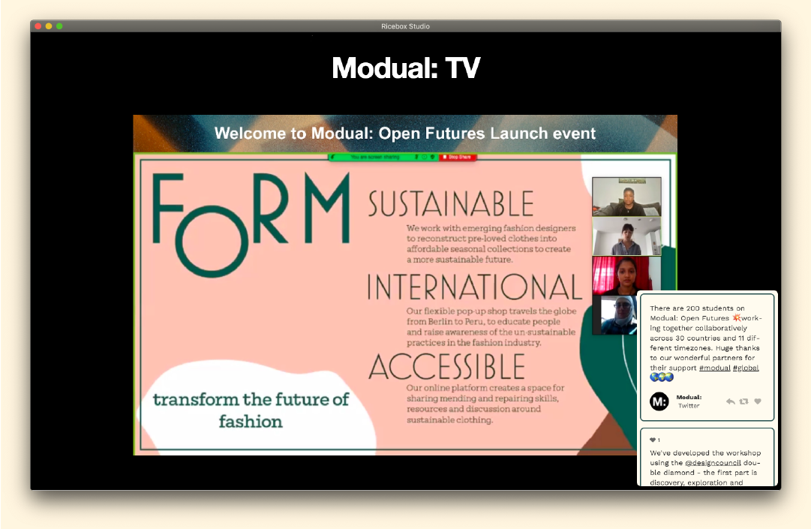
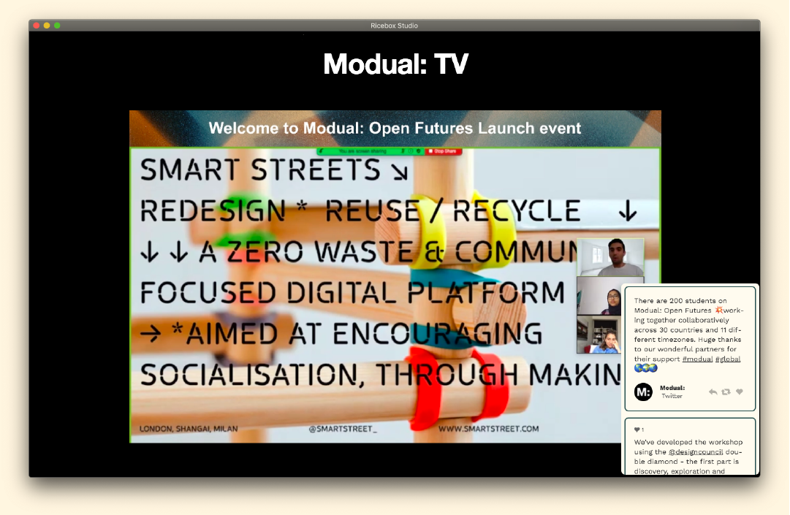
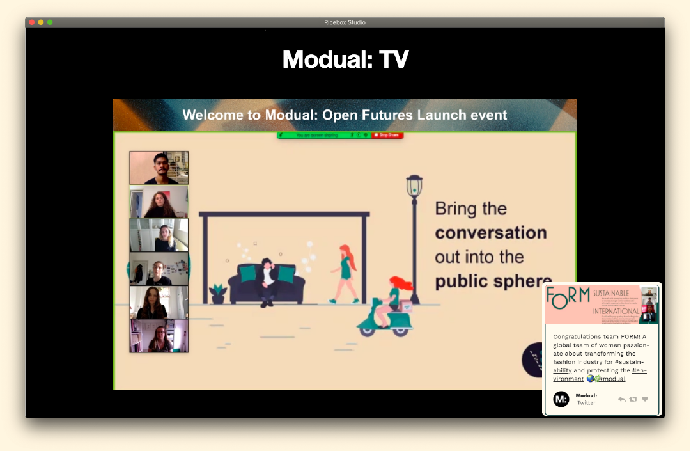
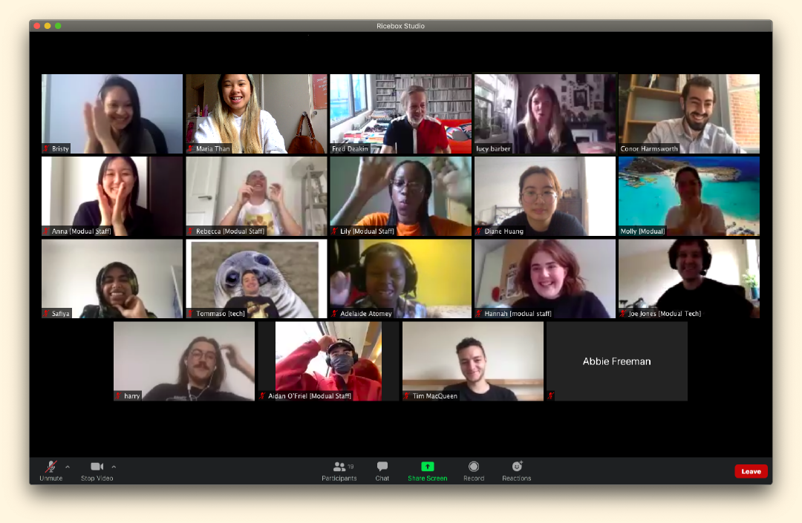

Modual TV LIVE (above)
Graphic cards for the broadcast (below)
   
Modual participants presenting their project pitches (below)
    Modual: Open Futures
Introducing Modual: Open Futures - A two week collaborative online workshop for students, alumni and creatives around the world to shape our post-COVID world with the power of creativity.
Led by University of the Arts London in collaboration with Studio Moross, Blast Theory, Extinction Rebellion, Design Manchester, Glasgow School of Art and The British Council.
Modual is UAL’s collaborative online workshop facilitated by Fred Deakin and Abbie Freeman, produced by Molly Gavriel. Modual: Open Futures has been developed in collaboration with Snootie Studios and Ricebox Studio. Since 2015 it has been empowering students to create positive change and help bridge the gap between education and the creative industry.
This workshop hosted almost 200 global participants through online facilitation from 12 different time zones! All sessions were also broadcasted online, available to external audiences, at Modual TV which was curated and run by Ricebox Studio.
Visit these links to check out Modual's recent activities ↓
Roles:
Broadcast Curation and Management